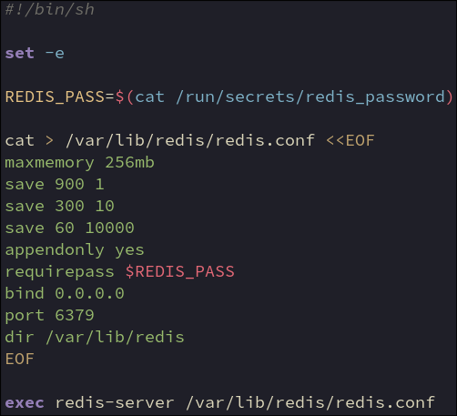

Create redis config file in location writeable by non-privileged redis user
maxmemory 256mb = maximum amount of memory Redis is allowed to use
save 900 1 = after 900 seconds (15 minutes), if at least 1 key has changed, take a snapshot
save 300 10 = after 5 minutes, if 10 or more keys changed, snapshot
save 60 10000 = after 1 minute, if 10,000+ keys changed, snapshot
appendonly yes = Log every write operation to a file on disk, in real time. Allows rrebuilding of memory cache after container restart
requirepass $REDIS_PASS = set the access password. Wordpress uses this to communicate with redis
bind 0.0.0.0 = listen on all addresses with the docker network
port 6379 = standard port used for redis. Wordpress will communicate via this port
dir /var/lib/redis = data dir used for saving snapshots (host mount for persistence)
Start the server using the previously created config
Server becomes PID1